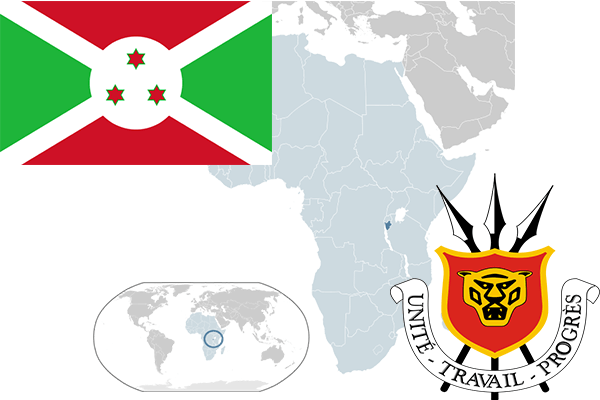

To`liq nomi: Burundi Respublikasi
Region: Markaziy Afrika
Qonunchilik shakli: Respublika
Mustaqillik kuni: 1-iyul 1962 yil (Belgiyadan)
Poytaxti: Bujumbura
Maydoni: 27 830 km² (dunyoda 142 -o`rinda )
Chegaradosh davlatlari: Kongo Demokratik Respublikasi, Ruanda, Tanzaniya
Aholisi: 11 099 298 (dunyoda 78-o`rinda ) 2016 -yil roʻyxat
Aholi zichligi: 323 /km²
Aholining o`rtacha yoshi: 51,3 yil ( 52,1 ayollar, 50,5 erkaklar)
Rasmiy tili: Fransuz va Rundi tili
Dini: 62% katolik, 32% mahalliy dinlar, 5% protestant
Pul birligi: Burundi Franki
Telefon prefiksi: +257
Internet domen: .bi
Xalqaro tashkilotlarga a`zoligi: BMT (1962 –yildan)
Dengiz va okeanlarga chiqishi: Yo`q
YIM: Butun: $ 3,1 mlrd, Jon boshiga: $ 389 (2008 - yil roʻyxati)
Yirik shaharlari: Bujumbura, Gitega